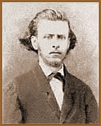

Luís Nicolau Fagundes Varela
nasceu no estado do Rio de Janeiro, na cidade de Rio Claro, em
18 de Agosto de 1841. Era filho de Emiliano Fagundes Varela e
Emília de Andrade. Passou a infância na fazenda Santa
Rita e na vila de S. João Marcos, onde o pai era juiz.
Posteriormente, residiu em Catalão, Goiás; nesta
cidade, Fagundes Varela conheceu Bernardo
Guimarães, o então juiz municipal. De volta
ao Rio de Janeiro, morou em Angra dos Reis e Petrópolis,
concluindo ali os estudos primários e secundários.
Em
1861 publicou o primeiro livro de poesia, Noturnas. No
ano de 1859 Fagundes Varela viaja para São Paulo, e em
1862 matricula-se na Faculdade de Direito, que nunca seria concluída,
optando pela literatura e dissipando-se na boemia, fortemente
influenciado pelo ''byronismo'' dos estudantes paulistanos. No
mesmo ano casou-se com Alice Guilhermina Luande, atriz circense
da cidade de Sorocaba. Este matrimônio não era desejado
pelas famílias do casal, assim a penúria financeira
de Fagundes Varela foi agravada.
Uma das mais belas obras do autor é o poema
Cântico do Calvário, inspirado na morte
precoce de Emiliano, seu primeiro filho, falecido aos três
meses de vida. A partir deste momento, o poeta entrega-se definitivamente
ao alcoolismo. Em contrapartida, cresce sua inspiração
criadora.
Vozes da América foi publicada
em 1864, e sua obra-prima Cantos e Fantasias, em 1865.
No ano seguinte, viaja para Recife e é avisado sobre o
falecimento da esposa. Assim, em 1867 retorna para São
Paulo e matricula-se novamente no 4º ano de Direito. Porém,
abandona o curso mais uma vez e recolhe-se na casa paterna, em
sua cidade natal. Fagundes Varela permanece até 1870 em
Rio Claro, compondo suas obras entre noitadas boêmias, vagando
indefinidamente pela vida.
Casou-se pelas segunda vez com a prima Maria Belisária,
com quem teve duas filhas e um filho que também morreu
prematuramente. Em 1870 vai para Niterói na companhia de
seu pai, estabelecendo-se ocasionalmente na casa de familiares
e ainda freqüentando a vida noturna carioca. Em 17 de fevereiro
de 1875, morre aos 34 anos de apoplexia, já em estado de
completo desequilíbrio mental.
Em uma de suas primeiras obras (Arquétipo),
Fagundes Varela revela-se um hábil na arte de versar. Além
da angústia predominante em sua poesia, percebe-se também
uma forte apelação religiosa e mística. A
influência amorosa e até mesmo os temas sociais e
patrióticos enquadram-se na totalidade de sua extensa obra.
Varela é o patrono da Cadeira nº 11 da "Academia
Brasileira de Letras", por escolha do fundador Lúcio
de Mendonça.
Escreveu as seguintes obras:
Noturnas (1861); Vozes da América (1864);
Cantos e fantasias (1865); Cantos meridionais
e os Cantos do ermo e da cidade (1869). Deixou inédito
o Anchieta ou Evangelho na selva (1875), O
diário de Lázaro (1880) e outras poesias. Otaviano
Hudson, amigo fiel, reuniu os Cantos religiosos (1878),
com o fim de auxiliar a viúva e filhos do poeta. As Poesias
completas, organizada por Frederico José da Silva
Ramos, foram lançadas em 1956.
Por
Spectrum
Obra
Disponível: